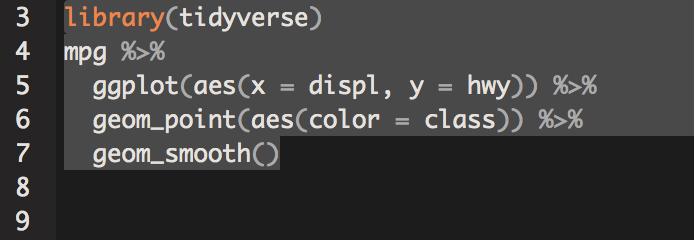

Introduction
If you’ve found yourself here, you’ve probably been asked to create a reproducible example, or reprex, in response to a question you asked on the RStudio Community Site. This post provides a cursory overview of both creating a reprex as well as how to share your reprex on the RStudio Community site.
A brief reprex “how to”
- Install and load the
reprex package
- Highlight the code and associated packages, as indicated by
library(package_name), like so:

- Copy the highlighted code by pressing Ctrl/Cmd + c
- In the console type
reprex() and hit Enter/Return
- Everything that you need to post a reprex is now automatically stored on your clipboard!
Why you should reprex
Writing a reprex for the problem you’re encountering is one of the best ways to demonstrate that you are being considerate of the people who are going to help you solve the error(s) in your code. You don’t have to write a reprex, but when you do, you’re saying “I’m having trouble with something, and I want to demonstrate that I value your time and expertise by creating a reprex. I know that creating a reprex will make it a little bit easier for you to help me, and I want to help you help me.”
Reprexes are significantly easier to read, as well as copy and paste. This means that the people helping you solve your error(s) are going to spend less time:
- Going back and forth in the forums asking for more information
- Trying to replicate the exact error(s) you’re dealing with
- Interpreting a jumble of non-formatted code
This means they’re going to have more time to do one thing: help you
Still not convinced a reprex is necessary?
No one can force you to make a reprex, but they can decide not to answer your question when you don’t provide a reprex.
Imagine that you’ve made a cake, and for some reason it’s turned out absolutely awful - we’re talking completely inedible. Asking a question without a reprex is like asking, “Why didn’t my cake turn out right?” – there are hundreds of possible answers to that question, and it’s going to take a long time to narrow in on the exact cause for your inedible cake creation.
Asking a question with a reprex is like asking, “My cake didn’t turn out, and here’s the recipe I used and the steps that I followed. Where did I go wrong?” Using this method is going to significantly increase the likelihood of you getting a helpful response, faster!